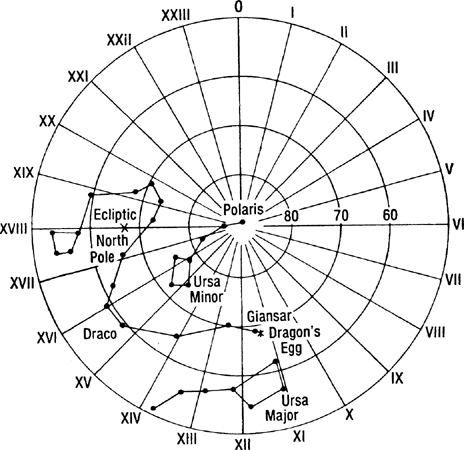
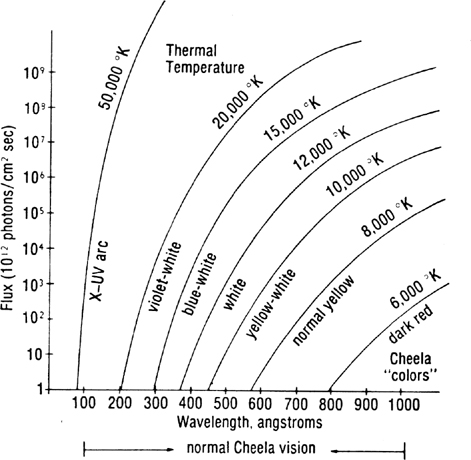
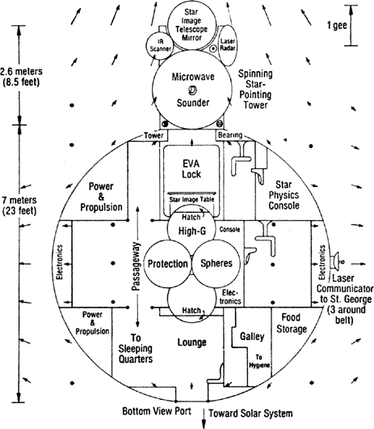
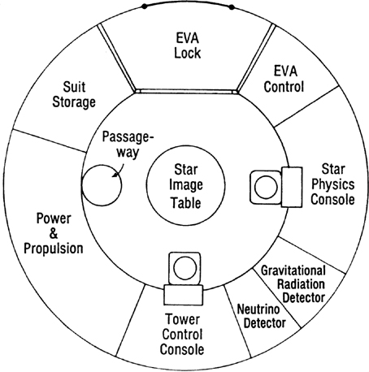
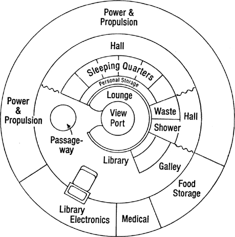

Technical Appendix
The following sections are selected extracts from the 2064 Edition of Del Rey's Science Encyclopedia, published by Random House Interplanetary, New York, Earth.
DRAGON'S EGG
Dragon's Egg is a nearby neutron star. It has a mass of about one-half that of the Sun but a diameter of only 20 kilometers. It is spinning at 5.0183495 revolutions per second, has a gravitational field at its surface of 67-billion gees, and a magnetic field of close to a trillion gauss. As is shown in Figure 1, the star has four poles. In addition to the normal north and south spin poles, it has "east" and "west" magnetic poles that lie almost on the equator. The lines drawn from the east magnetic pole in Figure 1 are the lines of magnetic longitude. The actual magnetic field is three-dimensional, and extends for some distance out into the region around the star.

Figure 1. Dragon's Egg

Figure 2. Interior Structure of Dragon's Egg
The internal structure of Dragon's Egg is shown in Figure 2. The center has a liquid core 7 km in radius containing superfluid neutrons, a small quantity of superfluid protons, and enough normal fluid electrons to balance the charge on the protons. At the very center of the star, where the densities and pressures are highest, there are various exotic elementary particles mixed in with the neutrons.
Over this core of liquid neutrons is a 2 km thick mantle of crystalline neutrons and nuclei. The crystalline crust varies from pure neutrons near the liquid core to nearly all nuclei near the top of the mantle. The outer crust of the star consists of neutron-rich nuclei (mostly iron) with a density near the surface of about 7 million grams per cubic centimeter. The number of neutrons in the outer-crust nuclei increases with depth, while the spacing between the nuclei decreases. The boundary between the outer crust and the mantle is the "neutron drip" region, where the neutrons can "drip" out of the highly neutron-rich nuclei and wander over to close-by neighboring nuclei.
The crust and mantle are solid structures over a liquid core. As the star cools and shrinks, the crust cracks and thrusts up mountain ranges. The mountains vary in height from a few millimeters to as much as 10 centimeters. The higher mountain ranges poke up out of the predominantly iron-vapor atmosphere, which becomes negligible at about 5 cm.
The large Mount Exodus volcano in the northern hemisphere of Dragon's Egg is a volcano that formed over a deep crack in the crust of the star. The liquid material at the lower depths rises through the fissure to form the volcanic shield. Because of the temperature differential with depth and the beta decay that occurs in the nuclei as they rise to regions of lower density, the lava can release enough energy to maintain its flow against gravity. Volcanos such as Mount Exodus can build up lava shields many centimeters in height and hundreds of meters in diameter and will finally cause starquakes.
Starquakes involve the drop of a lava shield or mountain range by a few millimeters in the 67-billion-gee gravity field of the star. Starquakes in several pulsars have been detected from the Earth by observing the slight decrease in the period of the pulsar due to the decrease in inertia of the star from the lowering of the mountain range.
Dragon's Egg was the product of a supernova explosion that occurred about 500,000 years ago at a distance of 50 light-years from the Solar System. In the process of formation, the neutron star/pulsar acquired a significant proper velocity of 30 km/sec (one light-year in 10,000 years or 6 AU in one year). The star was first discovered by space scientist V. Sawlinski in 2020 (see Reference 1). He detected its radio pulsations using the CCCP-ESA (See Acronyms—Ancient National Organizations) Out-of-the-Ecliptic probe, which was 200 AU up out of the planetary ecliptic plane. (See Figure 3 showing the relative position of Dragon's Egg, Sol, and the OE probe in 2020.)
At the time of its discovery in 2020, Dragon's Egg was at a distance of 2300 AU from earth. When the humans finally arrived at the star in the first interstellar spacecraft, St. George (see St. George), the distance had narrowed to 2120 AU. At the time of this edition (2064) the star is at a distance of about 2040 AU. It will reach its point of closest approach of 250 AU in about 300 years, then recede again. Some perturbation of the outer planets is expected, but there should be no significant effects on the orbit of Earth.
The position of Dragon's Egg in the sky was determined by S-Y Wang (see Reference 2) to be almost at the same declination (+70 degrees) and right ascension (11.5 hours) as Giansar, the bright star at the end of the constellation Draco (The Dragon). Its position among the constellations in the northern sky is shown in the simplified star chart of Figure 4.
CHEELA PHYSIOLOGY
By the time the humans discovered Dragon's Egg, life forms had evolved on the neutron star. (Amazingly enough, the possibility of the existence of life on a neutron star was predicted almost a century ago by the radio astronomer F. D. Drake in Reference 3. Dr. Drake was a great-grandfather of Amalita Shakhashiri Drake, one of the crew on Dragon Slayer.) The first forms of life on Dragon's Egg were plants, which lived by running a heat cycle between the hot crust and the cold of the sky. These plants later evolved into mobile animal forms.

Figure 3. Near-Soler Space in 2020 AD (to scale)

Figure 4. Northern Constellations in 2020
The dominant animal life forms on the star are called cheela. Since they are intelligent, the cheela have roughly the same complexity as humans. That implies that they have the same number of nuclei, so it is not surprising that they weigh about the same as humans—70 kg. The cheela are flat, amoeba-type creatures about 2.5 mm in radius (0.5 cm in diameter), and 0.5 mm high, with a density of 7 million g/cc.
The atomic nuclei that make up the cheela do not have captive electron clouds to keep them isolated from each other, but instead share a "sea" of free electrons. Because of the resulting close proximity of the nuclei, it is as easy for cheela nuclei to exchange neutrons as it is for human atoms to exchange electrons. The nuclei couple into "nuclear bonded molecules" by neutron exchange. Since the cheela use nuclear coupling instead of molecular coupling in their bodies, their rate of living is about one million times that of humans.
Cheela can form crystalline "bones" when needed, but normally keep a more flexible structure and can flow around and into instruments to operate them. Because of the high gravitational field, cheela do not have strength to extend themselves more than a few mm above the crust. Their psychology with respect to gravity, height, and things-over-your-head is identical to the ancient science fiction stories by Hal Clement about the alien beings called Mesklinites.
The magnetic field on Dragon's Egg dominates everything. The velocity of sound, the opacity of the atmosphere, the force it takes to move, the flow of lava and landslides, the pressure of the atmosphere, and many other things, vary by ratios of 10:1 from a direction along the magnetic field to a direction transverse to the field. The structure of the crustal surface consists of close-packed, dense "hairs" aligned along the magnetic field. These are horizontal along the magnetic equator and vertical at the magnetic poles.
It is easier for things to move along the magnetic field lines than transverse to them. But this also means that energy can be extracted by loss mechanisms for motion along the field lines, whereas transverse to the field lines, there is little motion due to the rigidity, so there are few losses. Since the electromagnetic fields in light are transverse to the direction of propagation, it is easier to see along the magnetic field lines.
Even the nuclei in the bodies of the cheela have their aspect ratio changed as much as 10:1 in the direction of the magnetic field, since it is easier for the protons in the nuclei to move in the direction of the magnetic field than across it. Thus, as is shown in Figure 5, a cheela at the magnetic pole will be 10 times taller than one at the equator, and one at the equator will be 10 times wider toward the magnetic poles than transverse. Because of this variability, the concept of "length" was slow to develop in the cheela sciences. Even the cheela measuring sticks vary, and if the cheela make surveys, they will find that according to the number of measuring sticks needed to count off a distance on the star, their home is "flattened" 10:1 near the magnetic poles.
The actual cheela body is, of course, much more complex than the stereotyped diagrams of Figure 5. A more lifelike picture is shown in the sketch in Figure 6. This was drawn from memory by the Leonardo da Vinci of Dragon's Egg (and first cheela Keeper-of-the-Sender), Troop Commander/Astrologer Swift-Killer. The Trooper in the drawing is Squad Leader North-Wind (identified by his two-button insignia of rank). He is holding a short sword and a dragon tooth (although squad leaders did not usually carry the long spear). The two puckered sections in his side are either carrying pouches or eating orifices. The small seminal fluid ejection holes under each eye-stub are the primary sex organs unique to a male cheela.
The cheela communicate by strumming the crust with their lower surfaces (tread) to produce directed vibrations in the neutron star crust. The strong magnetic fields polarize the surface material and since the crust has a nuclei lattice and an electron sea, the cheela have three modes of talking: long-talk—along the magnetic field using Rayleigh-type compressional waves; short-talk—transverse (shear) waves for communication across the magnetic field lines; and fast-talk—using electromagnetic fields generated by their bodies to excite the electron sea. Since fast-talk travels at the speed of light, it is somewhat faster than the two acoustic waves, but it is more highly attenuated and is used mostly for whispering.

Figure 5. Relative Shapes of Cheela Bodies Under Influence of Gravity and Magnetic Fields: A, no magnetic field but strong gravity; B, near the magnetic poles magnetic stretching compensates for gravity; C, near the magnetic equator the cheela elongate along the magnetic field.

Figure 6. Squad Leader North-Wind with Short Sword and Dragon Tooth (Copyright 2050 by Swift-Killer, White Rock Clan)
A cheela's eyes are a remarkable example of parallel evolution. In structure and function they are close parallels to the bright blue, stalk-supported eyes of the scallop shellfish on earth. The eyes of the cheela are about 0.1 mm =100 microns in diameter. To give the eyes adequate resolution, they must use wavelengths of 0.1 microns = 1000 angstroms or smaller. Thus, the normal range of cheela vision is the UV region, 1000 angstroms to 200 angstroms, although they can see down into the X-ray band if there is enough illumination. Some individuals (Bright's Afflicted) can see up into the violet end of the human visual range (4000 angstroms).
The illumination for seeing comes primarily from the glowing surface of the star. At a temperature of 8200 K the neutron star crust has adequate flux in the long-wavelength part of the cheela vision band (700-1000 angstroms), but it cuts off at 600 angstroms. Things that are hotter (cheela bodies at 8500-9000 K, and hot illumination sources from 10,000-50,000 K) not only have more photons, but their "color" shifts toward "blue" and the resolution goes up. Cooler things, (like the top of a cheela or a plant) have a shift to longer, "redder" wavelengths. (See Figure 7.)

Figure 7. Photon Flux on Dragon's Egg
CHEELA HISTORY
The story of Dragon's Egg and its inhabitants is covered in great detail by Nobel Laureate P. C. Niven in Reference 4. To date, this is the only book to win the Nobel, Pulitzer, Hugo, Nebula, and Moebius prizes in the same year (2053). Figure 8 is taken from the second volume of this definitive three-volume study/story and illustrates the major cultural migrations of the developing cheela.

Figure 8. Historical Migrations of the Developing Cheela
According to ancient myths of the cheela, they are descended from a "chosen clan" that was driven from the northern hemisphere by a hateful Dragon God, who was said to live inside what is now the Mount Exodus volcano. The Dragon God sent blasts of fire, rivers of molten lava, and dense smoke to drive the cheela southward into a purgatory region where they were forced to travel in the hard direction (across the magnetic field lines), through a "feeling lost" region covered with dense smoke.
The cheela use a combination of magnetic and Coriolis fields for directional homing. In the "feeling lost" region, the lines of magnetic direction are parallel to the lines of rotation, and the cheela lose their inherent sense of direction and feel lost.
The smoke just above the equator is due to an interaction between the east-west magnetic field and the rotation of the star. The smoke from the volcano travels predominantly along the magnetic field lines until it reaches the east and west poles, where the magnetic field lines dip into the surface. The smoke then leaks out at the magnetic poles and moves again along the magnetic field lines, but now along the equator, driven by the equatorial "trade winds" in the atmosphere. The star thus has a crescent shaped band of smoke in the magnetic longitude of the volcano, and a circular band just above the spin equator.
The "chosen clan," driven from their original home by the Dragon God, finally moved southward across the spin equator to the southern hemisphere of the star, leaving the purgatory region behind. They found a land of plenty, with many edible plants and animals, but no other cheela. Their experience would be similar to the first entry of humans into the North American continent. Like the deep water barriers on earth, the "feeling lost" regions at the spin equator had produced a psychological barrier to the cheela that had kept the southern hemisphere isolated until then.
In this new land, the "chosen clan" discovered a bright star sitting just over the south pole. The very bright star was our sun, only 2120 AU (1/30 of a light year) away. A monotheistic religion developed based on worship of the God-star Bright. The "chosen clan" grew, and split into many clans, but all clans stayed under the loose rule of a Leader of All Clans.
The development of the cheela from a nomadic tribe into a great empire that finally established its rule over the entire star is well covered in Niven's book.
RELATIVE TIMES
The relative time scales between the cheela and the human race is still a subject of debate among experts, since the cheela physiology is so drastically different from human physiology.
The basic unit of time on Dragon's Egg is the revolution rate of the star, which is 5.0183495 rps, or a period of approximately 0.1993 seconds. Some experts have equated one turn of the star with one human day, giving a relative rate of 0.43 million to one. Others point out that since there is no night or day on the neutron star and the cheela, who never sleep, are active the full turn, that the ratio should be closer to a million to one.
The cheela use a base 12 number system (they have twelve eyes) and their next unit of time after the turn is a great of turns or 144 turns. They occasionally use a dozen turns, but it has never had the same significance as the week does to humans. A great of turns is 28.7 seconds, while a human year is 31.6 million seconds. The ratio of a human year to a cheela great of turns is 1.1 million to one.
From studying the history of the cheela we have learned that a cheela spends about 12 greats (six minutes) as a hatchling, 12 greats as a young apprentice, 30 greats (15 minutes) as a worker, 12 greats as an Old One tending eggs and hatchlings, then the rest of its life (maximum of 24 greats or 12 minutes) as an Aged One. All of these indications lead to the conclusion that the effective relative time scale between the cheela and humans is approximately one million to one.
EQUIVALENT TIME SCALES
| Human | Cheela | (Equivalent human stages) |
|---|---|---|
| 10 ky | 10 Bg | Primordial manna |
| 5 ky | 5 Bg | Beginning of life |
| 2 ky | 2 Bg | Multicelled organisms |
| 1 ky | 1 Bg | Large plants |
| 500 y | 500 Mg | Invertebrates, amphibians |
| 200 y | 200 Mg | Reptiles |
| 50 y | 50 Mg | Mammals, monkeys |
| 10 y | 10 Mg | Proto-cheela |
| 5 y | 5 Mg | Cave dwellers |
| 1 y | 1 Mg | Nomad hunters, hand axes |
| 1 mo | 100 kg | Neanderthal, stone tools, cemeteries |
| 15 d | 40 kg | Homo sapiens, hunting and gathering, cave art |
| 5 d | 14 kg | Neolithic, writing, farming, churches |
| 2 d | 5 kg | Bronze, cities, writing, mounds, war |
| 1 d | 2,500 g | Iron, Persia, Greece, Roman empire |
| 12 h | 1,400 g | Medieval |
| 2 h | 250 g | 10 generations |
| 30 m | 60 g | Active life span |
| 15 m | 30 g | Professional life span |
| 1 m | 2 g | |
| 29 s | 1 great = 144 turns | |
| 200 ms | 1 turn of Egg | |
| 1 us | 1 s |
INFORMATION STORAGE AND TRANSFER
Human transmission rate: The laser communication link from Dragon Slayer (see Dragon Slayer) up to St. George (see St. George) had a transmission rate of 400 MHz. This gave a bit rate of 200 megabits/sec., assuming good error correction practices.
Cheela reception rate: Since the cheela effectively live a million times faster, the human messages from the 400 MHz laser communication link were received at a maximum of 200 bits/cheela sec., which is about 5 words/cheela sec. This is a slow facsimile rate (a little slower than you can read).
Total bits transmitted: In 0.5 human day (43,200 seconds) the humans transmitted 10 trillion bits from the 25 HoloMem crystals in their ship's library down to the cheela.
HoloMem Storage: Each HoloMem holds about 0.4 trillion bits. Since the HoloMem crystals are cubes 5 cm on a side, their volume is 125 cc. This means that each bit has the equivalent of a cube 7 microns on a side for storage. In that 7 micron cube there are about a trillion atoms.
Total HoloMem storage: A printed page holds roughly 350 words, 2100 characters or 15,000 bits. A book of 330 pages is about 5 million bits. The HoloMems could hold about 2 million books. For comparison, in 2050, the United States Library of Congress held about 50 million items (books, newspapers, trade publications, copyright items, etc.)
ST. GEORGE
The spaceship that took the humans to Dragon's Egg was a primitive monopole-catalyst fusion rocket. Its basic structure was a cylinder 500 meters long and 20 meters in diameter, with large spherical external tanks of liquid deuterium fuel. The mass ratio was about 10. St. George accelerated at 0.035 gees, and reached a speed of 0.035 the speed of light at its turnover point. The total trip time out to the neutron star was 1.94 years.
DRAGON SLAYER
The scientific spacecraft used for the close approach to the neutron star was a seven-meter sphere with a spinning tower 1.6 m in diameter and 2.5 m tall, containing the microwave sounder, infrared telescope, laser radar, star image telescope mirror, and other star-oriented instruments. When in synchronous orbit about the star, the science instrument tower on the top of the ship was aligned in the direction of the north spin pole of the neutron star. The bottom end of the science sphere had a viewing port that looked southward toward the distant Solar System.
Around the equator of the ship were six viewing ports that looked out at the neutron star whirling about the ship. The ship was inertially stabilized, so that the distant stars stayed fixed in the viewing ports. The ship, being in orbit around the neutron star with a period of 0.1993 seconds (5.018 rps), rotated with respect to the neutron star at 5 times a second. The science turret was de-spun at the orbital rate so that the instruments pointed to the star at all times. (The entire space ship could not be rotated at those speeds; had it been, the crew would have been thrown against the outer wall with a force of 350 gees).
Figure 9 through 12 are diagrams of the three decks and a side view of the scientific spacecraft, Dragon Slayer. The steady component of the residual gravitational tidal fields around and inside the ship are shown by arrows. In addition to the steady component, there is an alternating acceleration component of about the same magnitude as the steady component, which varies twenty times a second as the four-lobed gravity pattern of the neutron star and tidal compensator masses rotates about the ship five times a second.
DEORBITER AND COMPENSATOR MASSES
The human explorers of Dragon's Egg used gravitational techniques to move into and survive in a synchronous orbit around the neutron star. The prime mover for all of the gravitational maneuvers near Dragon's Egg was the large deorbiter mass. Originally a small planetoid about 1000 kilometers across, it had been picked up (along with other asteroidal debris) by the neutron star in its wanderings. The planetoid was condensed by the humans into an ultra-dense mass one kilometer in diameter by injection of magnetic monopoles.

Figure 9. Dragon Slayer—Side View (Arrows indicate steady component of gravity tides)
There were actually two large condensed asteroids made at the same time. One was used in a close-encounter gravity whip to drop the deorbiter down from its original orbit out in the "asteroid belt" of the neutron star into the desired orbit. This orbit was a highly elliptical one with a perihelion at 406 km and aphelion at 100,000 km, where the human interstellar ship, St. George, moved in a 12.82-minute circular orbit.

Figure 10. Dragon Slayer—Top Deck
The elliptical orbit of the deorbiter mass (called Bright's Messenger by precontact cheela) had a period of 4.56 minutes or 9.53 greats of turns of the neutron star. It thus took it only 2.28 minutes or 4.77 greats of turns to drop from the safe circular orbit of St. George to the dangerous synchronous orbit at 406 km above Dragon's Egg.
The gravity field of the neutron star is 400 million gees at the 406 kilometer altitude of Dragon Slayer. However, since the spacecraft was in orbit around the star, most of that 400 million gees was canceled by the fact that it was in a "free-fall" orbit. However, an object is only in free fall at its exact center of mass. When the middle of your body is in a free-fall orbit around a neutron star at 406332 m distance it will feel nothing. But if you are oriented with your feet toward the star, your feet, which are at 406331 m away from the star, are pulled by a gravity force that is 202 gees more than your middle, while your head, at 406333 m distance, is being pulled by a force that is 202 gees less than your middle. If your body is oriented in a direction tangent to the neutron star, your head and feet will feel a 101-gee compression instead of a 202-gee pull. A human cannot survive at a distance of 400 km from a neutron star without some kind of protection from these tidal forces.

Figure 11. Dragon Slayer—Main Deck

Figure 12. Dragon Slayer—Lower Deck
To protect the humans in Dragon Slayer from these residual gravity tidal forces, six tidal compensator masses were placed in a 200-meter radius ring about the science capsule and arranged so that the plane of the six masses was always at right angles to the direction to the neutron star. The compensator masses were made from asteroids about 250 km in diameter that were condensed to 100 m in diameter.
In the center of that ring of ultra-dense spheres, the masses are attempting to pull anything at the center out toward them. At the exact center of the ring all the forces cancel. However, if your head or feet are in the plane of the ring, since they are about one meter away from the exact center of the ring, they will be pulled with a force of 101 gees. If you try to orient your body to point along the axis of the ring, your head and feet will be compressed with a force of 202 gees. If made dense enough and placed at the right distances, the six compensator masses will cancel the neutron star tidal forces over a seven-meter diameter spherical region. (See Figure 9 which shows the residual tidal forces around Dragon Slayer).
In operation, the six compensators rotate about Dragon Slayer as it orbits the star at 5.018 rps. The individual orbits of the compensator masses are almost in a natural gravitational orbit, but require that the masses change speed slightly each half orbit to maintain the circular formation. This is accomplished by magnetic interactions between the magnetically charged compensators, assisted by trimming maneuvers carried out by robotic herder probes using monopole-catalyzed fusion rockets.
VISIT
The only significant personal contact between the cheela and the humans occurred for a period of 1.2 seconds on 20 June 2050 between Clear-Thinker of the cheela and Pierre Carnot Niven of the humans. This was a short interval during the occasion of a ten-second visit by a cheela expedition to examine the human spacecraft and the humans inside.
The cheela had to go to great lengths to protect themselves and the humans from the effects of gravity. The cheela would explode if their bodies were not kept under sufficient gravity to keep their matter in a degenerate state, and the gravitational fields that were comfortable to the cheela were destructive to human flesh.
The main cheela spacecraft was a crystal shell 4 cm in diameter. With its large number of docking pits for the smaller instrumental shells and individual flyers, it had the size and appearance of a golf ball. The main ship had a black hole of 11 billion tons mass at its center that kept the surface of the cheela ship at a gravitational level of 0.2 million gees. Although nowhere near the gravitational field strength on their neutron star home, the gravity was enough to keep the cheela from exploding. The gravity field on the humans inside the Dragon Slayer at a distance of 15 m away from the main cheela spacecraft was a reasonable 1/3 gee.
Clear-Thinker used a smaller individual flitter with a much smaller black hole of only 0.22 billion tons mass. This flitter was only 5 mm in diameter (just slightly larger than a cheela body) and the surface gravity again was sufficient to keep Clear-Thinker's body from exploding. This smaller personal flitter could come within 70 cm of a human, so that the human eyes could actually see some detail of the glowing-hot cheela body. (For a well-written description of this unique scene, see Reference 4.) Even at that, the gravitational field on the nose of the human, P. C. Niven, was over three gees.
We do not know the propulsion technique used by the cheela to lift their spacecraft off the surface of the neutron star (the escape velocity of Dragon's Egg is 1/4 the speed of light). We also do not know the propulsion technique that they use in space. The human observers during the Visit, P. C. Niven and A. S. Drake, saw no evidence of any rocket-type mechanism in the cheela spacecraft. From their conversations with the cheela communicators, they suspect that the cheela used some sort of antigravity catapult to get off the star, and some form of inertia drive in space. Our only clues are some old speculative papers (see References 5 and 6) based on the now-suspect Einstein theory of gravity.
At the time of this writing (2063), the knowledge of the antigravity and other space drives, including a faster-than-light drive, remains locked in the encrypted sections of the HoloMem crystals containing the knowledge of the cheela after they surpassed the human race in development. Present estimates are that we will be able to duplicate the cheela antigravity catapult (and decode that section of the HoloMem) in another 10 years. We have only a few clues on the inertia drive. Scientists estimate that it will take us at least two more decades before we learn enough to find the code to that section.
REFERENCES
V. Sawlinski et al., "A nearby short period pulsar," Astrophysical Journal, 561, 268 (2020)
S-Y Wang, "The Egg of the Dragon—Sol's Nearest Neighbor," Astro. Sinica, 83, 1789 (2020)
F. D. Drake, "Life on a Neutron Star," Astronomy, Vol. 1, No. 5, 5 (Dec. 1973)
P. C. Niven, My Visit with Our Nucleonic Friends, Ballantine Interplanetary, New York, Earth and Washington, Mars (2053)
R. L. Forward, "Guidelines to antigravity," Am. J. Physics, 31, 166 (1963)
R. L. Forward, "Far Out Physics," Analog Science Fiction/Science Fact, Vol. XCV, No. 8, 147 (August 1975)